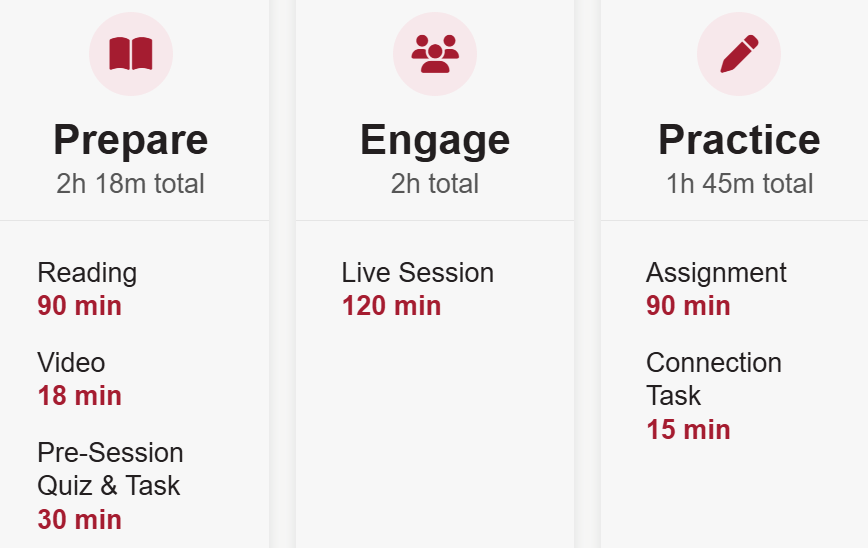

Data Fluency
An online course designed and developed for staff at Harvard University to work with data responsibly, effectively, and collaboratively across Schools, departments, and administrative functions.
Project Overview
I designed and developed an online course for staff at Harvard University to work with data responsibly, effectively, and collaboratively across Schools, departments, and administrative functions.

I collaborated with a cross-functional team that led primary data collection (surveys, interviews, focus groups). I analyzed and synthesized these datasets to inform key interaction, layout, and curriculum decisions.
The Problem
Harvard staff increasingly work in complex data environments where information is spread across multiple systems, teams use different definitions and processes, and data practices vary widely across the University. This creates challenges in knowing which data to trust, how to work with it responsibly, how to interpret and communicate findings, and how to evaluate analyses — including those produced with AI. At the same time, expectations around data governance and AI-enabled work are evolving faster than many staff members' existing data skills.
Through surveys, focus groups, and interviews, the team identified:
- Scattered resources for staff from different Schools
- Tools are not the problem; lack of a shared standard and system of data management is
- One-and-done training isn't enough; people need a reference guide
- The need for scenario-based discussions within a learning community, with people building a new culture together
- Learning must fit into existing workflows and schedules, with synchronous and asynchronous elements
- An urgent demand to know how to do data-related work with AI
Therefore, we built a four-month hybrid, instructor-led online course centered on team-based learning and learning-community building, open to all Harvard staff. With the intent to bring people together and foster a culture of talking about data, we set out to solve the underlying communication inefficiency.
Design Highlights
The assignments arrived as raw documents written for the learning design team, full of evaluation language and mixed in with the grading rubric. My task was to break each one down so learners know exactly what they are being asked to do, with as little unnecessary friction as possible. Module 2 shows the approach: I separated the document into instructions learners follow on the LXP and a template where they write their answers, translating evaluation language into instructional language along the way.


Impact
Splitting the document kept the evaluation intent intact while giving learners something they could act on. On the LXP they see a clear, time-boxed path of plain-language tasks. In the template they get one place to write, with prompts that tell them what a strong answer needs, so they spend their effort on the thinking the assignment is designed to assess rather than decoding what is being asked.
This follows cognitive load theory: separating the instructions from the response space reduces extraneous load, such as switching between rubric-style language and task steps, so learners' limited working memory goes to the germane work of defining a decision and reasoning about the data they would need.
I designed the learner path as a repeating rhythm of four phases that students move through in every module of the course. It gives learners a consistent way to orient themselves as they navigate the resources, assignments, guides, and readings. Showing the four phases visually makes it easy to see where they are and what comes next.



The roadmap in the first phase previews the time each phase asks for, so learners can plan their week before they start.
Impact
The roadmap helps learners plan their time, which supports adult learning theory and the self-directed learner. Our needs analysis pointed the same way: learners wanted an online experience that is flexible but structured. The repeated path provides the structure, and the roadmap leaves them in charge of when and how they work through it.